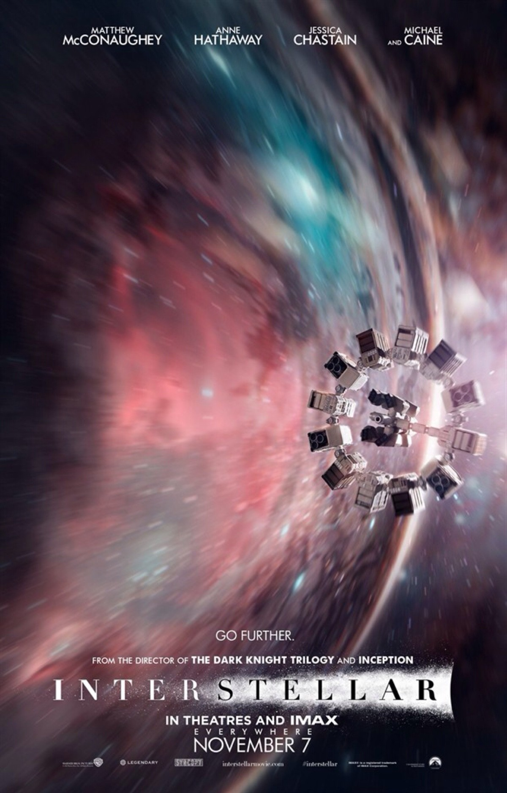

| 星际穿越 Interstellar (2014) | |
导演: 克里斯托弗·诺兰 编剧: 乔纳森·诺兰 / 克里斯托弗·诺兰 主演: 马修·麦康纳 / 安妮·海瑟薇 / 杰西卡·查斯坦 / 麦肯吉·弗依 / 卡西·阿弗莱克 / 更多... 类型: 剧情 / 科幻 / 冒险 制片国家/地区: 美国 / 英国 / 加拿大 语言: 英语 上映日期: 2014-11-12(中国大陆) / 2020-08-02(中国大陆重映) / 2014-11-07(美国) 片长: 169分钟 又名: 星际启示录(港) / 星际效应(台) / 星际空间 / 星际之间 / 星际远航 / 星际 / Flora's Letter IMDb: tt0816692 官方小站: 《星际穿越》电影专题 星际穿越的剧情简介 · · · · · · 近未来的地球黄沙遍野，小麦、秋葵等基础农作物相继因枯萎病灭绝，人类不再像从前那样仰望星空，放纵想象力和灵感的迸发，而是每日在沙尘暴的肆虐下倒数着所剩不多的光景。在家务农的前NASA宇航员库珀（马修·麦康纳 Matthew McConaughey 饰）接连在女儿墨菲（麦肯吉·弗依 Mackenzie Foy 饰）的书房发现奇怪的重力场现象，随即得知在某个未知区域内前NASA成员仍秘密进行一个拯救人类的计划。多年以前土星附近出现神秘虫洞，NASA借机将数名宇航员派遣到遥远的星系寻找适合居住的星球。在布兰德教授（迈克尔·凯恩 Michael Caine 饰）的劝说下，库珀忍痛告别了女儿，和其他三名专家教授女儿艾米莉亚·布兰德（安妮·海瑟薇 Anne Hathaway 饰）、罗米利（大卫·吉雅西 David Gyasi 饰）、多伊尔（韦斯·本特利 Wes Bentley 饰）搭乘宇宙飞船前往目前已知的最有希望的三颗星球考察。 他们穿越遥远的星系银河，感受了一小时七年光阴的沧海桑田，窥见了未知星球和黑洞的壮伟与神秘。在浩瀚宇宙的绝望而孤独角落，总有一份超越了时空的笃定情怀将他们紧紧相连……  |
|